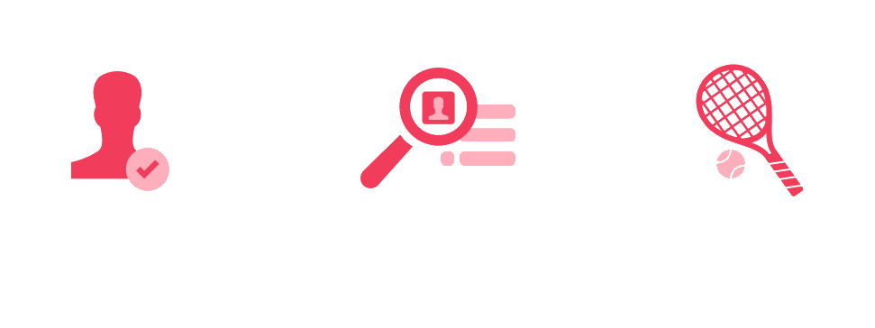
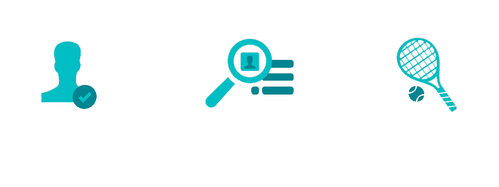
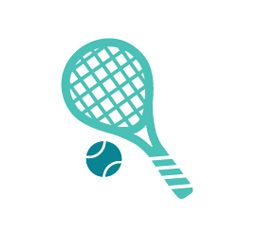
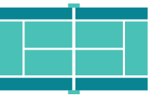

TENNIS SETAPP IS THE SOCIAL PLATFORM
THAT ALLOWS YOU TO CONNECT AND PLAY
WITH YOUR OPTIMUM TENNIS MATES
Leverage our international community, whether you’re looking for existing tennis mates or
newcomers, create or join a match and hit the courts. Everything in just a few clicks.
LEARN MORE
INTRODUCTION
We launched Tennis SetApp simply because we love tennis.
Actually, because we love to PLAY tennis.
And like us, millions of other people around the world do - and we want to
make it easier for them to play tennis together.
Tennis SetApp is a global platform that allows tennis players of every age and
level to easily set up a game of tennis, whether that be a full match or a playful volley.
The service is accessible on both a website (tennissetapp.com) and a mobile app
available for iOS and Android (Tennis SetApp).
OUR MISSION IS TO FACILITATE TENNIS
MATCHES FOR OUR USERS, EITHER WITH
NEW OR LONG-STANDING OPPONENTS
Through Tennis SetApp, users will be able to automatically find a tennis
counterpart that fits all their features (location, scheduling, tennis level and
style of play), and to create or join a tennis match - anywhere, anytime.
CORE FEATURES MATES
With only one click, Tennis SetApp will automatically
provide users with a list of nearby players that fit their skill level,
style of play and schedule. They can save preferred players to
their “favorites” to easily invite them to play the next time.

MATCHES
Tennis SetApp allows players to create their own tennis match.
The player has the optiton to invite only his/her favorite players,
or make the match public, allowing other players to join.
TEACHERS
Tennis SetApp allows players to find tennis teachers in our
database, view their profiles and information (rates, specialties,
years of experience) and also for teachers to schedule and
invite users to clinics.

COURTS
Tennis SetApp provides a list of courts around you.
If a particular court is not present in our database, you can
create it using our form. In a few seconds, the court will be
available for you and every other player who wants to
schedule a match there.
RATING SYSTEM
Thanks to our easy review system, you can rate the punctuality
and the compliance to the tennis level displayed on the profile
of every user you meet. This is nothing serious (hey, we are
here to have fun, not to judge!) but allows Tennis SetApp
to offer a greater reliability.
CONTACTS
We are here to listen.
Like us on Facebook, follow us on Twitter
or e-mail us.
Tell us what you DO and DON’T like about
Tennis SetApp so that we can improve daily and
provide you with the best service possible.